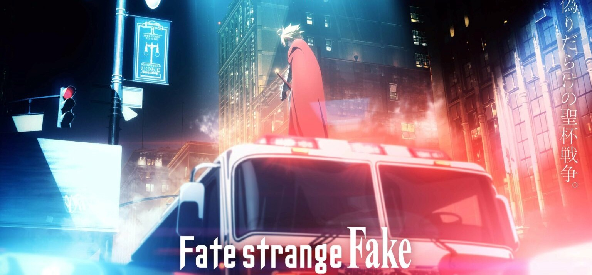
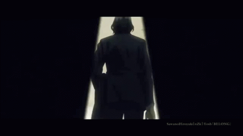
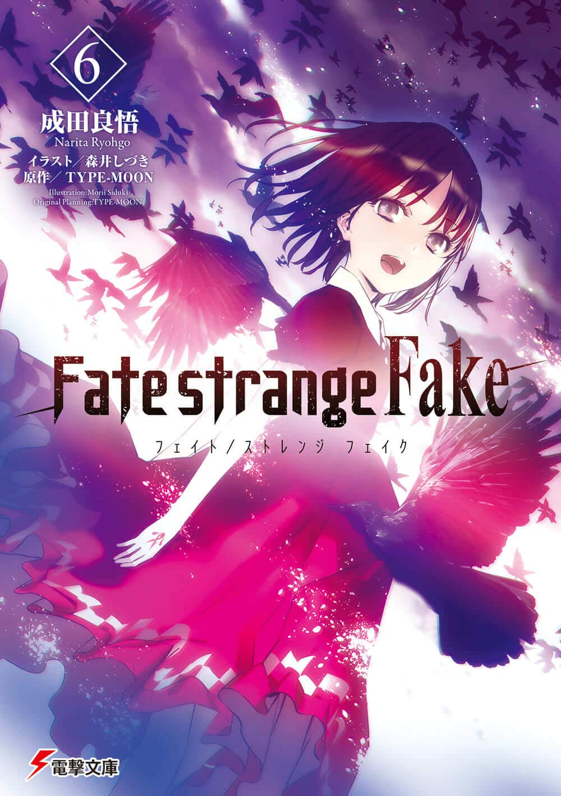

|  | |||
| Home | Sobre | Noticias | Contato |

NoticiasFATE/STRANGE FAKE: ANIMÊ DE SPIN-OFF ESTREIA EM DEZEMBRO Série começou em 2008 como ‘Fake/states night’, uma piada de 1º de abril.Por gasseruto / 24 de setembro de 2022 às 15:46 Durante a ANIPLEX ONLINE FEST, foi anunciada uma animação especial para TV de Fate/strange Fake, intitulada Fate/strange Fake -Whispers of Dawn- — ela estreia no Japão em 31 de dezembro, como parte do já tradicional especial de Ano Novo de Fate. Confira: FATE/STRANGE FAKE: ANIMÊ DE SPIN-OFF ESTREIA EM DEZEMBRO |
|||
|  | |||
| Visite nosso instagram para apoiar nosso site. | |||